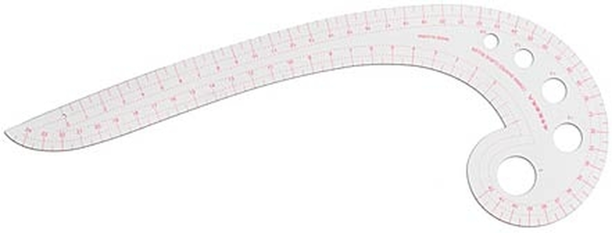
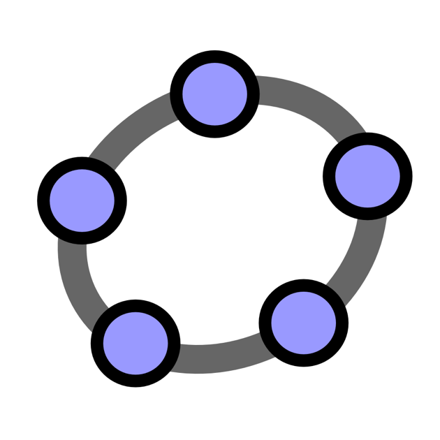
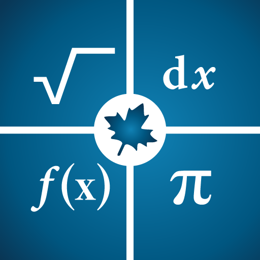

Tools you will need when learning maths.
Playing music requires an instrument. Marking artistic paintings need colors and brushes. When learning mathematics, you only need a pen and some paper, however, you will advance faster if you have these tools.
Like every other subject, you need more advanced tools to move faster in the field that you are researching.
1. Rulers and compasses
If you study geometry or graphs, you will need rulers. Not only straight rulers, but you will also need protractors to measure angles, curve rulers to draw graphs. Moreover, the compass will come in handy when you need to draw a circle.
2. Mathematics softwares
Geogebra - A free software that help you discover new geometry.
Maple - A strong calculator and visualizer for maths.
Back in the day, people used to do tedious calculations by hand, which can contain errors and take a lot of time. Nowadays, programs like Maple will do all that calculations for you. Moreover, if you have trouble imagine shapes, Geometry can visualize them for you. Also, you can create interactive models, especially for teachers which need aids to help their students.
3. LaTeX

Yes, you can type mathematics papers in Word, but if you don't know LaTeX, it will take more time to type the papers. LaTeX is like a simple programming language for maths typing. It allows shortcuts and decorations for your papers. Moreover, not every symbol and function in maths is supported by Word but can be incorporated using LaTeX. Taking time to learn LaTeX will help you from wasting time finding symbols from the Internet to copy and paste that into your papers.